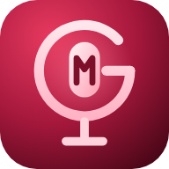

オケに合わせて、スマホで5トラックまで
デモ録音できます。
イヤホン推奨（スピーカーだとオケが声に混ざります）
録音はこのブラウザの中に自動保存されます。ブラウザのデータを消すと消えるので、できたら書き出しておいてください。
オケの1拍目が0秒ちょうどでないときは、1小節目の頭に再生位置を合わせてからこのボタン。
録った声がオケより遅れて聞こえるなら数値を上げます。
いちばん確実なのは自動測定：本番と同じイヤホンをつけて、聞こえるクリックに合わせて手拍子を8回叩いてください（Bluetoothイヤホンでも測れます）。
・クリップをタップで選択 → ドラッグで移動（上下で別トラックへ）
・選択中のクリップの左右の端をドラッグで長さを調整
・カットは再生位置（白い線）で切ります
・スナップONだと拍単位で動きます
・ピンチで拡大縮小
全トラックをミックスして、軽い m4a（AAC 128kbps）にします。ミュート中のトラックとクリック音は入りません。